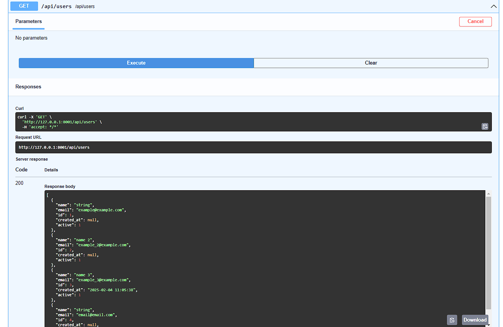
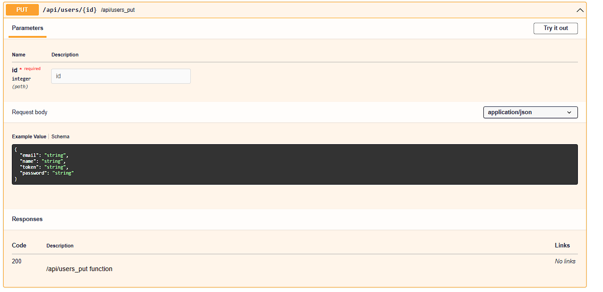
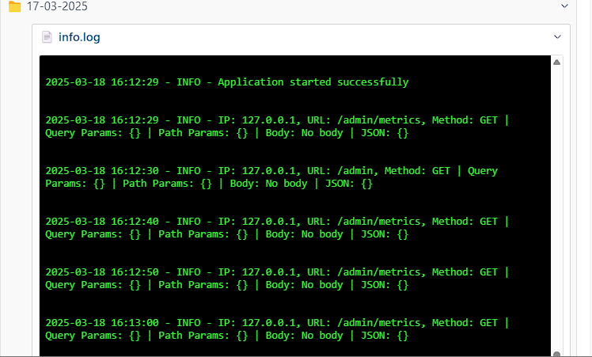

Lila
Lila is a minimalist Python framework based on Starlette and Pydantic. Designed for developers seeking simplicity, flexibility, and robustness, it enables efficient and customizable Web or API application development. Its modular structure and support for advanced configurations make it suitable for both beginners and experienced developers.
Key Features
- Simplicity: Intuitive and minimalist design.
- Flexibility: Support for multiple databases (MySQL, SQLite,PostgreSQL) and adaptation to various environments.
- Speed: Built on Starlette, known for its high performance in asynchronous applications.
- Robust Validation: Uses Pydantic to ensure consistent data.
- Editable and Configurable: Ready to use but fully customizable.
- Multi-language Support: Integrated support for multilingual applications.
- Compatibility: Can be used with like React,Angular,Vue,Svelte, Next.js, Remix, and others.
- Easy Migrations: Quick and straightforward database configuration.
- Jinja2 and HTML Sessions: Ready-to-use with dynamic templates and session handling, while remaining compatible with React, Angular, Vue,etc.
- SQLAlchemy: For the ORM or you can also use the connectors directly (mysql.connector, sqlite3, etc...)
- JWT: It comes integrated with helpers to generate tokens and the middleware already has a function that validates it.
- Easy generate Rest API CRUD: with few lines of code you can have a crud (get, post, put, delete, etc.), with field validations, middlewares, saving you time in developing
Free customization
You can use Lila with any styling framework you prefer, such as Tailwind CSS, Bootstrap, PicoCSS, or others.
Lila
Lila es un framework minimalista de Python basado en Starlette y Pydantic. Diseñado para desarrolladores que buscan simplicidad, flexibilidad y robustez, permite crear aplicaciones Web o APIs de manera eficiente y personalizable. Su estructura modular y soporte para configuraciones avanzadas lo hacen ideal tanto para principiantes como para desarrolladores experimentados.
Características principales
- Simplicidad: Diseño intuitivo y minimalista.
- Flexibilidad: Soporte para múltiples bases de datos (MySQL, SQLite,PostgreSQL) y adaptación a diversos entornos.
- Rapidez: Basado en Starlette, conocido por su alto rendimiento en aplicaciones asíncronas.
- Validación robusta: Uso de Pydantic para garantizar datos consistentes.
- Editable y configurable: Todo está listo para usar, pero también es completamente personalizable.
- Multi-idioma: Soporte integrado para aplicaciones multilingües.
- Compatibilidad: Puede ser utilizado con React,Angular,Vue,Svelte, Next.js, Remix js, entre otros.
- Migraciones sencillas: Configuración rápida y fácil para bases de datos.
- Jinja2 y sesiones HTML: Listo para usar con plantillas dinámicas y manejo de sesiones, pero compatible con React, Angular, Vue, entre otros .
- SQLAlchemy: Para la ORM o también se puede utilizar los connectores directamente(mysql.connector,sqlite3,etc...)
- JWT: Viene integrado con helpers para generar token y en el middleware ya viene una función que válida el mismo.
- Generación sencilla de CRUD , API Rest: con pocas lineas de codigo puedes tener un crud (get,post,put,delete,etc) , con validaciones de campos, middlewares, ahorrandote tiempo en desarrollar
Personalización Libre
Puedes usar Lila con cualquier framework de estilos que prefieras, como Tailwind CSS, Bootstrap, PicoCSS, u otros.
Installation
Installation
$ git clone https://github.com/seip25/Lila.git
$ cd Lila
$ python3 -m venv venv
$ source venv/bin/activate # On Windows use `venv\Scripts\activate`
$ pip install -r requeriments.txt
$ python3 app.py # Or python app.py
$ cd Lila
$ python3 -m venv venv
$ source venv/bin/activate # On Windows use `venv\Scripts\activate`
$ pip install -r requeriments.txt
$ python3 app.py # Or python app.py
Purpose: Configure and start the application. app.py is the main entry point where the application is configured and initialized.
app.py Explanation
# Import necessary modules and routes
from core.app import App
from routes.routes import routes
from routes.api import routes as api_routes
# Import environment variables for host and port
from core.env import PORT, HOST
import itertools
import uvicorn
import asyncio
# Optionally, uncomment the following imports for database migrations and connections.
# You can enable database migration or connection setup if necessary.
# from database.migrations import migrate
# from database.connections import connection
# Combine application and API routes into a single list.
# This combines both regular app routes and API routes for easy use.
all_routes = list(itertools.chain(routes, api_routes))
# Initialize the app with debugging enabled and combined routes.
# The app is initialized with debug mode on and the routes to handle the requests.
app = App(debug=True, routes=all_routes)
# Uncomment the following lines for CORS configuration if needed:
# CORS (Cross-Origin Resource Sharing) configuration is optional.
# cors={
# "origin": ["*"],
# "allow_credentials": True,
# "allow_methods":["*"],
# "allow_headers": ["*"]
# }
# app = App(debug=True, routes=all_routes, cors=cors)
# Main asynchronous function to run the application.
# This function starts the application server asynchronously.
async def main():
# Uncomment the following line to execute database migrations.
# This ensures that the database schema is up-to-date before starting the app.
# migrations = await migrate(connection)
# Start the Uvicorn server with the app instance.
# The app is served by Uvicorn, which is an ASGI server.
uvicorn.run("app:app.start", host=HOST, port=PORT, reload=True)
# Entry point of the script to run the main async function.
# This is where the execution of the app begins.
if __name__ == "__main__":
asyncio.run(main())
Routes
Routes are the access points to the application. In Lila, routes are defined in the
routes directory (by default, but you can place them wherever you want) and
imported into
app.py for use. Routes can be configured to handle HTTP requests, API
methods, and
more.
In addition to JSONResponse you can use HTMLResponse, RedirectResponse and PlainTextResponse, or StreamingResponse , to transmit data in real-time (useful for streaming video/audio or large responses).
Below is an example of how routes are defined in Lila:
routes/api.py
#Import from core JSONResponse .
from core.responses import JSONResponse
# Manages routes for API endpoints.
from core.routing import Router
# Initializes the router instance to handle API routes.
router = Router()
# Defines a simple API route that supports the GET method.
@router.route(path='/api', methods=['GET'])
async def api(request: Request):
"""Api function"""
# English: Returns a simple JSON response for API verification.
return JSONResponse({'api': True})
Get url parameteres
In this function, we receive a parameter via
the URL using {param}.
If the parameter is not provided,
it defaults to 'default'.
The response is a JSON containing the received value.
Receiving GET Parameters
@router.route(path='/url_with_param/{param}', methods=['GET'])
async def param(request: Request):
param = request.path_params.get('param', 'default')
return JSONResponse({"received_param": param})
Or you canl also do it like this
Receiving GET Query parameters
@router.route(path='/url_with_param/?query_param', methods=['GET','POST'])
async def query_param(request: Request):
query_param= request.query_params.get('query_param', 'query_param')
return JSONResponse({"received_param": query_params})
Basic Imports
from core.responses import JSONResponse # Simplifies sending JSON responses.
from core.routing import Router # Manages API routes.
from core.request import Request # Handles HTTP requests in the application.
from pydantic import EmailStr, BaseModel # Validates and parses data models for input validation.
from core.helpers import get_user_by_id_and_token
from middlewares.middlewares import validate_token
router = Router()
Middleware and Decorators Usage
Middlewares allow intercepting requests before they reach the main logic of the API.
In this example, we use @validate_token to validate a JWT token in the
request
header.
Middleware Validation
@router.route(path='/api/token', methods=['GET','POST'])
@validate_token # Middleware to validate JWT token.
async def api_token(request: Request):
return JSONResponse({'api': True})
Data Validation with Pydantic
Pydantic allows defining data models that automatically validate user input.
Additionally, specifying a model in the route generates automatic documentation in
/docs.
Validation with Pydantic
from pydantic import EmailStr, BaseModel
class ExampleModel(BaseModel):
email: EmailStr # Ensures a valid email.
password: str # String for password.
@router.route(path='/api/example', methods=['POST'], model=ExampleModel)
async def login(request: Request):
body = await request.json()
try:
input = ExampleModel(**body) # Automatic validation with Pydantic.
except Exception as e:
return JSONResponse({"success": False, "msg": f"Invalid JSON Body: {e}"}, status_code=400)
return JSONResponse({"email": input.email, "password": input.password})
Automatic Documentation Generation
Thanks to the integration with Pydantic, the API documentation is generated automatically
and is
accessible from
/docs. You can also generate an OpenAPI JSON file for external tools.
Documentation Generation
router.swagger_ui() # Enables Swagger UI for API documentation.
router.openapi_json() # Generates OpenAPI JSON for external tools.
Importing Routes in app.py
To use the routes defined in the router, you need to obtain them with
router.get_routes() and import them into app.py.
Route Import
routes = router.get_routes() # Retrieves all defined routes.
Static files
To load static files(js,css,etc) you can use the mount() method.
What will be received as parameters that trade by default
path: str = '/public', directory: str = 'static', name: str = 'static'
Static
from core.routing import Router
# Creating an instance of the Router to define the routes, if it was not previously created in the file
router = Router()
# Mounting the static files in the 'static' folder, url ='/public' by default
router.mount()
Templates Render (Jinja2)
In Lila, we use Jinja2 by default to render HTML templates and send them to the
client.
With context, you can pass information such as translations, data,
values, lists,dicts or you need.
By default, translations from the translations.json file are always loaded,
theme in case you want to use themes,
lang by default, constants from the .env file or session,
title for the project title or name,
and version to version or avoid cache issues when rendering the HTML for
the
client.
The advantages of using this rendering system, whether with translations or data passed with Jinja2, include improved SEO for your web application.
The parameters that the render function from core.templates can
receive
are the following:
request:Request, template: str, context: dict = {}, theme_: bool = True,
translate: bool = True, files_translate: list = []
template is for the file name, starting from the path
of the directory located in templates/html/, for example:
index.html.
It will look for a file index.html in the HTML directory within the
templates
folder
(templates/html/index.html).
context receives a dictionary with the
values you want to pass to the template.
translate and files_translate are for translations. You can
choose
whether
to translate the template or not,
and specify one or multiple files (a list passed to the function) to
translate in
addition
to translations.json.
Templates
# Example of rendering an HTML file with Jinja2, passing translation parameters in the context
@router.route(path='/', methods=['GET'])
async def home(request: Request):
response = render(request=request, template='index') # Renders the 'index.html' template with translations
return response
# Example of rendering an HTML file with Jinja2, passing translation parameters in the context
@router.route(path='/login', methods=['GET'])
@session_active
async def login(request: Request):
# Template login.html inside the 'auth' folder (templates/html/auth/login.html).
# files_translate is a list of files to translate, in this case, the 'guest.json' file in the locales folder.
# context is a dictionary with the values to pass to the template.
response = render(request=request, template='auth/login', files_translate=['guest'], context={'example_context': 'Hi!', 'example_array': [1,2,3]})
return response
Then, in your HTML file, you can use the variables, includes, extends, for loops, if
statements,
etc., from Jinja2 to render the content.
Here is the documentation for
Jinja2.
This allows you to use what you passed in the context and translations with
translate,
as shown in the following example:
templates/html/index.html
title : {{title}}
version : {{version}}
lang :{{lang}}
Context: {{example_context}}
Markdown /HTML
To render markdown files, the
renderMarkdown function is used, which receives the following parameters:
request,file : str , base_path:str ='templates/markdown/',css_files : list = [],js_files:list=[],picocss : bool =False
file is the name of the file, starting from the base_path of
the
directory
located in templates/markdown/, for example: index.md.
It will look for an index.md file in the markdown directory inside the
templates
folder
(templates/markdown/index.md).
css_files and js_files are lists of CSS and JS files that will
be
loaded in the
generated HTML file.
picocss is a boolean indicating whether the PicoCSS CSS file should be
loaded.
Below is an example of how markdown files are rendered in
Lilac:
Markdown
from core.templates import renderMarkdown
@router.route(path='/markdown', methods=['GET'])
async def home(request: Request):
#Define a list of CSS files to include in the response
css = ["/public/css/styles.css"]
#Renders a markdown file with PicoCSS styling
response = renderMarkdown(request=request, file='example', css_files=css, picocss=True)
return response
Internationalization (Translations)
Translations are used to internationalize an application and display content in different
languages.
In Lila, translations are stored in the locales directory and can be
dynamically
loaded into the application.
To load a locale file, use the translate function from
core.helpers.
Then, you can access translations using the translate function, which
returns a
dictionary with all translations,
or use translate_ for a specific text or translation, which will return the
required translation
(if not found, it returns the provided text).
You can also use the lang helper to retrieve the language in which the
application
is running for the user
making the request, either based on session settings or application configuration.
The following example shows how to create and load a locale file and translate a text string.
locales/translations.json
{
"Send": {
"es": "Enviar",
"en": "Send"
},
"Cancel": {
"es": "Cancelar",
"en": "Cancel"
},
"Accept": {
"es": "Aceptar",
"en": "Accept"
},
"Email": {
"es": "Email",
"en": "Email"
},
"Name": {
"es": "Nombre",
"en": "Name"
},
"Back": {
"es": "Volver",
"en": "Back"
},
"Hi": {
"es": "Hola",
"en": "Hi"
}
}
Here we show you how to use these helpers to retrieve translations stored in the
locales directory.
With the file_name parameter, you specify which file within the locales
directory
you want to load.
By default, translations.json is always loaded.
Then, using key, you specify which key to look for within your translations.
The framework will automatically search based on your .env configuration or
the
user's session settings.
translations
from core.helpers import translate_
msg_error_login = translate_(key="Incorrect email or password", request=request, file_name="guest")
# By default, translations.json is always loaded if the file_name parameter is not provided.
You can also use translate to retrieve all translations from the file.
translations
from core.helpers import translate
msg = translate(request=request, file_name="guest")
# By default, translations.json is always loaded if the file_name parameter is not provided.
Models (SQLAlchemy)
Models are used to define the structure of data in the application.
SQLAlchemy as the default ORM for database management. SQLAlchemy allows creating database models, executing queries, and handling migrations efficiently.
Using Models
The `Base` class, imported from `core.database`, serves as the foundation for all models . Models inherit from `Base` to define database tables with SQLAlchemy.
Example: User Model
This example demonstrates how to create a `User` model using SQLAlchemy. The model defines a `users` table with columns such as `id`, `name`, `email`, `password`, `token`, `active`, and `created_at`.
models/user.py
from sqlalchemy import Table,Column,Integer,String,TIMESTAMP
from core.database import Base
from database.connections import connection
class User(Base):
__tablename__='users'
id = Column(Integer, primary_key=True,autoincrement=True)
name=Column( String(length=50), nullable=False)
email=Column( String(length=50), unique=True)
password=Column(String(length=150), nullable=False)
token=Column(String(length=150), nullable=False)
active=Column( Integer, nullable=False,default=1)
created_at=Column( TIMESTAMP)
#Example of how to use SQLAlchemy to make queries to the database
def get_all(select: str = "id,email,name", limit: int = 1000) -> list:
query = f"SELECT {select} FROM users WHERE active =1 LIMIT {limit}"
result = connection.query(query=query,return_rows=True)#Return rows
return result
#Example of how to use SQLAlchemy to make queries to the database
def get_by_id(id: int, select="id,email,name") -> dict:
query = f"SELECT {select} FROM users WHERE id = :id AND active = 1 LIMIT 1"
params = {"id": id}
row = connection.query(query=query, params=params,return_row=True)#Retrurn row
return row
#Example using ORM abstraction in SQLAlchemy
@classmethod
def get_all_orm(cls, db: Session, limit: int = 1000):
result = db.query(cls).filter(cls.active == 1).limit(limit).all()
return result
#Example of how to use the class to make queries to the database
users = User.get_all()
user = User.get_by_id(1)
For details on SQLAlchemy, visit the official documentation: SQLAlchemy Documentation.
Middlewares
Middleware functions are used to intercept requests before they reach the main logic of
the
application.
In Lila, middlewares are defined in the middlewares directory (can be
modified to
any file and/or directory) .
Middlewares can be used for tasks such as
authentication, logging, and error handling.
By default Lila comes with 3 middlewares to start any application, middlewares can be
used with
decorators @my_middleware .
login_required , to validate that you have a signed session, for the 'auth'
key
that is passed as a parameter to be able to modify it as you wish.
If this session is not found, it redirects to the url that is passed as a parameter, by
default
it is "/login" .
Otherwise it will continue its course executing the route or function .
Then we have session_active , which is used to verify if you have an active
session,
it will redirect to the url that is received as a parameter, by default it is
"/dashboard" .
The third is validate_token
Which is used to validate a JWT token thanks to the get_token helpers imported in
from core.helpers import get_token
middlewares/middlewares.py
from core.session import Session
from core.responses import RedirectResponse,JSONResponse
from core.request import Request
from functools import wraps
from core.helpers import get_token
def login_required(func,key:str='auth',url_return='/login'):
@wraps(func)
async def wrapper(request, *args, **kwargs):
session_data= Session.unsign(key=key,request=request)
if not session_data:
return RedirectResponse(url=url_return)
return await func(request,*args,**kwargs)
return wrapper
def session_active(func,key:str='auth',url_return:str ='/dashboard'):
@wraps(func)
async def wrapper(request,*args,**kwargs):
session_data= Session.unsign(key=key,request=request)
if session_data:
return RedirectResponse(url=url_return)
return await func(request,*args,**kwargs)
return wrapper
def validate_token(func):
@wraps(func)
async def wrapper(request: Request, *args, **kwargs):
await check_token(request=request)
return await func(request, *args, **kwargs)
return wrapper
async def check_token(request:Request):
token = request.headers.get('Authorization')
if not token:
return JSONResponse({'session':False,'message': 'Invalid token'},status_code=401)
token = get_token(token=token)
if isinstance(token,JSONResponse):
return token
Here we give you several examples of how to use all 3, with the decorators.
Middlewares in routes
#Middleware to validate the JWT Token.
@router.route(path='/api/token', methods=['GET','POST'])
@validate_token #Middleware
async def api_token(request: Request):
"""Api Token function"""
print(get_user_by_id_and_token(request=request))
return JSONResponse({'api': True})
#Middleware to validate session active
@router.route(path='/dashboard', methods=['GET'])
@login_required #Middleware
async def dashboard(request: Request):
response = render(request=request, template='dashboard', files_translate=['authenticated'])
return response
#Middleware validate if user get session active (if user get session redirect '/dashboard')
@router.route(path='/login', methods=['GET'])
@session_active #Middleware
async def login(request: Request):
response = render(request=request, template='auth/login', files_translate=['guest'])
return response
Connections to database
To use connections, you need to import the Database class from
core.database. With
that you can connect to your database, which can be SQLite, MySLQ, PostgreSQL or
whatever you
want to configure.
Below we leave you the example of how to connect. The connection will close automatically
after
being used, so you can use it as in this example in the variable connection
connections/connections.py
from core.database import Database
#SQLite
#Example connection to a sqlite database
config = {"type":"sqlite","database":"test"} #test.db
connection = Database(config=config)
connection.connect()
#MySql
#Example connection to a mysql database
config = {"type":"mysql","host":"127.0.0.1","user":"root","password":"password","database":"db_test","auto_commit":True}
connection = Database(config=config)
connection.connect()
mysql_connection = connection
Migrations
In Lila Framework, database migrations can be managed using SQLAlchemy and Lila's
configuration
to make migrations as easy as possible, using only the framework's code, thanks to its
Database class. There are two main ways to define database tables: using
"Table"
directly or using Models with "Base". Explanations and examples of both methods are
included
below.
Using Table: This method manually defines the table structure using SQLAlchemy's Table object.
mgirations/mgirations.py
from sqlalchemy import Table, Column, Integer, String, TIMESTAMP
from database.connections import connection
# Example of creating migrations for 'users'
table_users = Table(
'users', connection.metadata,
Column('id', Integer, primary_key=True, autoincrement=True),
Column('name', String(length=50), nullable=False),
Column('email', String(length=50), unique=True),
Column('password', String(length=150), nullable=False),
Column('token', String(length=150), nullable=False),
Column('active', Integer, default=1, nullable=False),
Column('created_at', TIMESTAMP),
)
async def migrate(connection,refresh:bool=False)->bool:
try:
if refresh:
connection.metadata.drop_all(connection.engine)
connection.prepare_migrate([table_users])#for tables
connection.migrate()
print("Migrations completed")
return True
except RuntimeError as e:
print(e)
Using Models: This approach defines database tables as Python classes that inherit from "Base". This is the recommended method as it provides more structure and ORM capabilities.
models/user.py
from core.database import Base
from sqlalchemy import Column, Integer, String, TIMESTAMP
class User(Base):
__tablename__ = 'users'
id = Column(Integer, primary_key=True, autoincrement=True)
name = Column(String(length=50), nullable=False)
email = Column(String(length=50), unique=True)
password = Column(String(length=150), nullable=False)
token = Column(String(length=150), nullable=False)
active = Column(Integer, nullable=False, default=1)
created_at = Column(TIMESTAMP)
Running Migrations: To apply migrations, import the models and execute the migration script.
migrations/migrations.py
from models.user import User # Import models for migrations
async def migrate(connection, refresh: bool = False) -> bool:
try:
if refresh:
connection.metadata.drop_all(connection.engine)
connection.migrate(use_base=True) # For models, always import models in the file
print("Migrations completed")
return True
except RuntimeError as e:
print(e)
Execute:Finally, for both Models and Table (you can use both if you want), run the migration function in the application's startup file:
You can pass the parameter refresh, to delete and recreate the tables
app.py
from database.migrations import migrate
from database.connections import connection
import asyncio
import uvicorn
async def main():
migrations = await migrate(connection,refresh=False) # Execute migrations for the app
uvicorn.run("app:app.start", host=HOST, port=PORT, reload=True)
if __name__ == "__main__":
asyncio.run(main())
Simple Generation of REST API CRUD
At Lila, we have a simple way to generate CRUDs with automatic documentation, allowing you to create your REST API efficiently.
Thanks to the combination of SQLAlchemy and Pydantic models, it is possible to perform data validations and execute structured queries for API generation.
Additionally, you can integrate custom middlewares to validate tokens, manage sessions, or process requests. With just a few lines of code, you can generate a fully documented REST API CRUD.
If you haven't already, enable migrations when you start the server
.
By default it uses SQLite, it will create a database file test.sqlite in
the
project root.
app.py
from database.migrations import migrate
from database.connections import connection
async def main():
migrations = await migrate(connection) # execute migrations ,for app
uvicorn.run("app:app.start", host=HOST, port=PORT, reload=True)
if __name__ == "__main__":
asyncio.run(main())
routes/api.py
from core.request import Request
from core.responses import JSONResponse
from core.routing import Router
from pydantic import EmailStr, BaseModel
from middlewares.middlewares import validate_token, check_token, check_session
from database.connections import connection # Database connection with SQLAlchemy
from models.user import User # SQLAlchemy 'User' model
router = Router()# Initialize the router instance for managing API routes.
# Pydantic model for validations when creating or modifying a user.
class UserModel(BaseModel):
email: EmailStr
name: str
token: str
password: str
# Middleware definitions for CRUD operations
middlewares_user = {
"get": [],
"post": [],
"get_id": [],
"put": [],
"delete": [check_session, check_token],#Example middlewares for web session 'check_session' and jwt 'check_token'
}
# Automatically generate CRUD with validations and configurations
router.rest_crud_generate(
connection=connection, # Database connection
model_sql=User, # SQLAlchemy model
model_pydantic=UserModel, # Pydantic model
select=["name", "email", "id", "created_at", "active"], # Fields to select in queries
delete_logic=True, # Enables logical deletion (updates 'active = 0' instead of deleting records)
active=True, # Automatically filters active records ('active = 1')
middlewares=middlewares_user, # Custom middlewares for each CRUD action
)
You can create your own middlewares and pass them as a list to customize
security and validations for each rest_crud_generate operation.
To generate the documentation, always remember to
run it after the routes router.swagger_ui() and
router.openapi_json()
Function Parameters for rest_crud_generate
Below are the parameters that this function accepts to generate CRUD automatically:
core/routing.py
def rest_crud_generate(
self,
connection,
model_sql,
model_pydantic: Type[BaseModel],
select: Optional[List[str]] = None,
columns: Optional[List[str]] = None,
active: bool = False,
delete_logic: bool = False,
middlewares: dict = None,
jsonresponse_prefix:str='',#Return with prefix list o dict 'data' first key
user_id_session:bool| str=False #Example 'user id' to validate in query with where 'user_id'= id session_user
) : Automatic Documentation
Below is an example of the generated documentation for the
rest_crud_generate
function:
Go to http://127.0.0.1:8001/docs, or as configured in your .env file (by
HOST and
PORT).
GET - Retrieve all users

GET - Output of all users

POST - Create new user

GET_ID - Retrieve a specific user

PUT - Update user

DELETE - Delete user

In this example, we did it with 'users', but you can apply it however you want according
to your
logic ,'products','stores',etc. Even modifying the core in core/routing.py.
For both the 'POST' or 'PUT' method function, If the framework detects that you pass data in the request body such as: 'password' , it will automatically encode it with argon2 to make it secure. Body example :
{
"email":"example@example.com",
"name":"name",
"password":"my_password_secret"
}
Then, if you pass 'token' or 'hash', with the helper function
generate_token_value
, it automatically generates a token, which will be saved in the database as the 'token'
column
with the value generated by the function
.
Body example :
{
"email":"example@example.com",
"name":"name",
"password":"my_password_secret",
"token":""
}
With 'created_at' or 'created_date' , it will save the date and time of the moment, as long as that field exists in the database table. Body example :
{
"email":"example@example.com",
"name":"name",
"password":"my_password_secret",
"token":"",
"created_at":""
}
For the 'PUT', 'GET' (get_id) or 'DELETE' methods
It is optional according to the logic of each REST API, you can pass it as
query string , user_id
or id_user, an example would be GET, PUT or DELETE as a method
to the url http://127.0.0.1:8001/api/products/1?user_id=20
Where it validates that the product ID '1' exists but also that it belongs to the user ID '20' .
Admin Panel
The Admin module allows you to manage an admin panel for your application. It includes authentication, model management, system metrics, and more. This panel is highly customizable and integrates easily with your application.
The idea is to provide you with a starting point for your admin panel. In core/admin.py, you can customize everything to your liking, adding two-factor authentication, different types of security, various model management options, etc.
Key Features
- Authentication: Secure login and logout for administrators.
- Model Management: Automatically generates routes and views to manage your models.
- System Metrics: Monitors memory and CPU usage for both the application and the server.
- Password Management: Allows administrators to change their passwords.
- Logs: Enables administrators to view application
Logs.
Basic Usage
To use the admin panel, you need to import the Admin class and pass it a list of models you want to manage, the prefix that will be used for the URL (e.g., http://127.0.0.1:8001/admin/, where "admin" is the default prefix or the one passed to the Admin function). You can also specify the default user with the user_default parameter. Then, integrate the generated routes into your application.
app.py
from core.admin import Admin
from models import User
# Create admin routes for the User model
admin_routes=Admin(models=[User],prefix="admin",user_default="admin")
# Integrate routes into the application
from core.app import App
from routes.routes import routes
from routes.api import routes as api_routes
import itertools
all_routes = list(itertools.chain(routes, api_routes, admin_routes))
app = App(debug=True, routes=all_routes)
Default Admin User
The first time you start the admin panel, a default user is created (which you can modify using the user_default parameter in the Admin function) with the following credentials:
- Username:
admin - Password: Automatically generated and displayed in the console.
Example console message:
Console
Default admin password: '9302a967cce443780477212553ae3d74625dd165a096a4ee8299dcf0c8079863126' and user is 'admin'
Generated Routes
The admin panel automatically generates the following routes:
- Login:
/admin/login(GET/POST) - Logout:
/admin/logout(GET) - Change Password:
/admin/change_password(GET/POST) - Dashboard:
/admin(GET) - Model Management:
/admin/{model_plural}(GET)
Authentication Middleware
To protect routes and ensure only authenticated administrators can access them, use the @admin_required decorator.
Middleware Usage
@router.route(path="/admin/dashboard", methods=["GET"])
@admin_required
async def admin_dashboard(request: Request):
return await self.admin_dashboard(request)
System Metrics
The admin panel displays real-time metrics, including:
- Lila framework memory usage.
- Lila framework CPU usage.
- System memory usage.
- System CPU usage.
These metrics are updated every 10 seconds.
Logs
In Lila, we use a middleware that you can enable or disable if you want to use Logs for info, warnings, or errors in your application.
The middleware is located in core/middleware.py and is added to the application with:
app.add_middleware(ErrorHandlerMiddleware).
This helps generate logs that you can view in the admin panel, organized by date (in folders) and type.


Documentación (Español)
Instalación
Instalación
$ git clone https://github.com/seip25/Lila.git
$ cd Lila
$ python3 -m venv venv
$ source venv/bin/activate # En Windows usa `venv\Scripts\activate`
$ pip install -r requeriments.txt
$ python3 app.py # O python app.py
$ cd Lila
$ python3 -m venv venv
$ source venv/bin/activate # En Windows usa `venv\Scripts\activate`
$ pip install -r requeriments.txt
$ python3 app.py # O python app.py
Explicación de app.py
Propósito: Configurar y arrancar la aplicación. app.py es el punto de entrada principal donde se configura e inicializa la aplicación.
Explicación de app.py
# Importar los módulos necesarios y las rutas
from core.app import App
from routes.routes import routes
from routes.api import routes as api_routes
# Importar las variables de entorno para el host y el puerto
from core.env import PORT, HOST
import itertools
import uvicorn
import asyncio
# Opcionalmente, descomentar las siguientes importaciones para migraciones y conexiones de base de datos.
# Puedes habilitar la migración de la base de datos o la configuración de la conexión si es necesario.
# from database.migrations import migrate
# from database.connections import connection
# Combinar las rutas de la aplicación y las rutas de la API en una sola lista.
# Esto combina tanto las rutas regulares de la aplicación como las rutas de la API para su uso fácil.
all_routes = list(itertools.chain(routes, api_routes))
# Inicializar la aplicación con depuración activada y rutas combinadas.
# La aplicación se inicializa con el modo de depuración activado y las rutas para manejar las solicitudes.
app = App(debug=True, routes=all_routes)
# Descomentar las siguientes líneas para configurar CORS si es necesario:
# La configuración de CORS (Cross-Origin Resource Sharing) es opcional.
# cors={
# "origin": ["*"],
# "allow_credentials": True,
# "allow_methods":["*"],
# "allow_headers": ["*"]
# }
# app = App(debug=True, routes=all_routes, cors=cors)
# Función principal asincrónica para ejecutar la aplicación.
# Esta función inicia el servidor de la aplicación de manera asincrónica.
async def main():
# Descomenta la siguiente línea para ejecutar migraciones de la base de datos.
# Esto asegura que el esquema de la base de datos esté actualizado antes de arrancar la app.
# migrations = await migrate(connection)
# Iniciar el servidor Uvicorn con la instancia de la aplicación.
# La app se sirve con Uvicorn, que es un servidor ASGI.
uvicorn.run("app:app.start", host=HOST, port=PORT, reload=True)
# Punto de entrada del script para ejecutar la función principal asincrónica.
# Aquí es donde comienza la ejecución de la app.
if __name__ == "__main__":
asyncio.run(main())
Rutas
Las rutas son los puntos de acceso a la aplicación. En Lila, las rutas se definen en el
directorio
routes(por defecto, pero puede ser donde tu quieras) y se importan en
app.py para su uso. Las rutas pueden ser
configuradas para manejar solicitudes HTTP, métodos de API, y más.
Además de JSONResponse puedes utilizar HTMLResponse, RedirectResponse y PlainTextResponse, o StreamingResponse , Para transmitir datos en tiempo real (útil para streaming de video/audio o respuestas grandes).
A continuación, se muestra un ejemplo de cómo se definen las rutas en Lila:
routes/api.py
#Importar para las respuestas JSONResponse .
from core.responses import JSONResponse
#Administra las rutas para los puntos finales de la API.
from core.routing import Router
#Inicializa la instancia del enrutador para manejar rutas de la API.
router = Router()
# Define una ruta de API simple que soporta el método GET.
@router.route(path='/api', methods=['GET'])
async def api(request: Request):
"""Api function"""
#Español: Devuelve una respuesta JSON simple para la verificación de la API.
return JSONResponse({'api': True})
Recibir parametros por GET
En esta función, recibimos un parámetro a través de la URL usando {param}.
Si el
parámetro no se envía, se asigna el valor por defecto 'default'. La
respuesta es un
JSON con el valor recibido.
Recepción de Parámetros GET
@router.route(path='/url_with_param/{param}', methods=['GET'])
async def param(request: Request):
param = request.path_params.get('param', 'default')
return JSONResponse({"received_param": param})
O también puedes hacerlo de esta manera
Receiving GET Query parameters
@router.route(path='/url_with_param/?query_param', methods=['GET','POST'])
async def query_param(request: Request):
query_param= request.query_params.get('query_param', 'query_param')
return JSONResponse({"received_param": query_params})
Imports básicos
from core.responses import JSONResponse # Simplifica el envío de respuestas JSON.
from core.routing import Router # Administra las rutas de la API.
from core.request import Request # Maneja solicitudes HTTP en la aplicación.
from pydantic import EmailStr, BaseModel # Valida y analiza modelos de datos para la validación de entradas.
from core.helpers import get_user_by_id_and_token
from middlewares.middlewares import validate_token
router = Router()
Uso de Middlewares y Decoradores
Los middlewares permiten interceptar solicitudes antes de que lleguen a la lógica
principal de la
API. En este ejemplo, usamos @validate_token para validar un token JWT en
el header
de
la solicitud.
Validación con Middleware
@router.route(path='/api/token', methods=['GET','POST'])
@validate_token # Middleware para validar el token JWT.
async def api_token(request: Request):
return JSONResponse({'api': True})
Validación de Datos con Pydantic
Pydantic permite definir modelos de datos que validan automáticamente la entrada del
usuario.
Además,
al especificar un modelo en la ruta, se genera documentación automática en
/docs.
Validación con Pydantic
from pydantic import EmailStr, BaseModel
class ExampleModel(BaseModel):
email: EmailStr # Garantiza que el email es válido.
password: str # Cadena de texto para la contraseña.
@router.route(path='/api/example', methods=['POST'], model=ExampleModel)
async def login(request: Request):
body = await request.json()
try:
input = ExampleModel(**body) # Validación automática con Pydantic.
except Exception as e:
return JSONResponse({"success": False, "msg": f"Invalid JSON Body: {e}"}, status_code=400)
return JSONResponse({"email": input.email, "password": input.password})
Generación Automática de Documentación
Gracias a la integración con Pydantic, la documentación de la API se genera
automáticamente y es
accesible desde /docs. También se puede generar un archivo JSON de OpenAPI
para
herramientas externas.
Generación de Documentación
router.swagger_ui() # Habilita Swagger UI para la documentación de la API.
router.openapi_json() # Genera JSON de OpenAPI para herramientas externas.
Importación de Rutas en app.py
Para usar las rutas definidas en el router, es necesario obtenerlas con
router.get_routes() e importarlas en app.py.
Importación de Rutas
routes = router.get_routes() # Obtiene todas las rutas definidas.
Archivos estáticos
Para cargar archivos estáticos(js,css,etc) se puede utilizar el método
mount().
Qué se recibirá
como parámetros que se intercambian por defecto.
path: str = '/public', directory: str = 'static', name: str = 'static'
Estático
from core.routing import Router
# Crear una instancia de Router para definir las rutas, si no se creó previamente en el archivo
router = Router()
# Montar los archivos estáticos en la carpeta 'static', url = '/public' por defecto
router.mount()
Renderizado de Plantillas (Jinja2)
En Lila, usamos Jinja2 por defecto para renderizar plantillas HTML y enviarlas al
cliente.
Con context, puedes pasar información
como traducciones, datos,
valores, listas,diccionarios o lo que necesites.
Por defecto, siempre se cargan las traducciones del archivo
translations.json,
theme en caso de que quieras usar temas,
lang como idioma predeterminado,
constantes del archivo .env o sesión,
title para el título o nombre del proyecto,
y version para gestionar versiones o evitar problemas de caché al
renderizar el
HTML
para el cliente.
Las ventajas de usar este sistema de renderizado, ya sea con traducciones o datos pasados con Jinja2, incluyen una mejor optimización SEO para tu aplicación web.
Los parámetros que puede recibir la función render de
core.templates
son los siguientes:
request:Request, template: str, context: dict = {}, theme_: bool = True,
translate: bool = True, files_translate: list = []
template es el nombre del archivo, comenzando desde el path
del directorio ubicado en templates/html/, por ejemplo:
index.html.
Buscará un archivo index.html en el directorio HTML dentro de la carpeta de
templates
(templates/html/index.html).
context recibe un diccionario con los valores que deseas pasar al template.
translate y files_translate son para traducciones. Puedes
elegir
si traducir la plantilla o no,
y especificar uno o múltiples archivos (una lista pasada a la función) para
traducir
además de translations.json.
Plantillas
from core.templates import render
# Ejemplo de renderizado de un archivo HTML con Jinja2, pasando parámetros de traducción en el contexto
@router.route(path='/', methods=['GET'])
async def home(request: Request):
response = render(request=request, template='index') # Renderiza la plantilla 'index.html' con traducciones
return response
# Ejemplo de renderizado de un archivo HTML con Jinja2, pasando parámetros de traducción en el contexto
@router.route(path='/login', methods=['GET'])
async def login(request: Request):
# Plantilla login.html dentro de la carpeta 'auth' (templates/html/auth/login.html).
# files_translate es una lista de archivos a traducir, en este caso, el archivo 'guest.json' en la carpeta locales.
# context es un diccionario con los valores a pasar a la plantilla.
response = render(request=request, template='auth/login', files_translate=['guest'], context={'example_context': 'Hola!', 'example_array': [1,2,3]})
return response
Luego, en tu archivo HTML, puedes usar las variables, includes, extends, bucles for,
condicionales
if,
etc., de Jinja2 para renderizar el contenido.
Aquí está la documentación de
Jinja2.
Esto te permite usar lo que pasaste en el contexto y las traducciones con
translate,
como se muestra en el siguiente ejemplo:
templates/html/index.html
título : {{title}}
versión : {{version}}
idioma :{{lang}}
Contexto: {{example_context}}
Markdown /HTML
Para renderizar archivos markdown se utiliza la función
renderMarkdown, que recibe los siguientes parámetros:
request,file : str , base_path:str ='templates/markdown/',css_files : list = [],js_files:list=[],picocss : bool =False
file es el nombre del archivo, comenzando desde la base_path
del
directorio
ubicado en templates/markdown/, por ejemplo: index.md.
Buscará un archivo index.md en el directorio de Markdown dentro de la
carpeta de
plantillas
(templates/markdown/index.md).
css_files y js_files son listas de archivos CSS y JS que se
cargarán
en el
archivo HTML generado.
picocss es un valor booleano que indica si se debe cargar el archivo CSS
PicoCSS.
A continuación, se muestra un ejemplo de cómo se representan los archivos
markdown
en
Lilac:
Markdown
from core.templates import renderMarkdown
@router.route(path='/markdown', methods=['GET'])
async def home(request: Request):
#Define una lista de archivos CSS para incluir en la respuesta
css = ["/public/css/styles.css"]
#Representa un archivo markdown con estilo PicoCSS
response = renderMarkdown(request=request, file='example', css_files=css, picocss=True)
return response
Internalización (Traducciones)
Las traducciones se utilizan para internacionalizar una aplicación y mostrar contenido en
diferentes
idiomas.
En Lila, las traducciones se almacenan en el directorio locales y se pueden
cargar
dinámicamente en la aplicación.
Para cargar un archivo de locales, utiliza la función translate desde
core.helpers. Luego, puedes acceder a las traducciones utilizando la
función
translate que devolvera un diccionario con todas las traducciones o
utilizar
translate_ ,para un texto o traducción en especifico, que devolvera la
traducción
que
necesita (en caso de no encontrarla
,devuelve el texto pasado).
También puedes utilizar el helper lang para que te devuelva por sessión o
configuración
de la aplicación en que idioma se esta ejecutando para dicho usuario que realizo la
solicitud.
El siguiente ejemplo muestra cómo crear y cargar un archivo de locales y traducir una cadena de texto.
locales/translations.json
{
"Send": {
"es": "Enviar",
"en": "Send"
},
"Cancel": {
"es": "Cancelar",
"en": "Cancel"
},
"Accept": {
"es": "Aceptar",
"en": "Accept"
},
"Email": {
"es": "Email",
"en": "Email"
},
"Name": {
"es": "Nombre",
"en": "Name"
},
"Back": {
"es": "Volver",
"en": "Back"
},
"Hi": {
"es": "Hola",
"en": "Hi"
}
}
Aquí te mostramos como utilizar dichos helpers para obtener las traducciones que dejas en
el
directorio locales
Con el parametro file_name indicas que archivo dentro de locales quieres
cargar, por
defecto siempre se caarga translations.json
Luego con key le dices que clave quieres buscar dentro de tus traducciones,
despues
el
framework buscará solo según tengas configurado en tu archivo .env o por sesión del
usuario
translations
from core.helpers import translate_
msg_error_login =translate_(key="Incorrect email or password",request=request,file_name="guest")
#Por defecto siempre se carga translations.json , si no se pasa el parametro file_name
También con translate puedes obtener todas las traducciones del archivo .
translations
from core.helpers import translate
msg =translate(request=request,file_name="guest")
#Por defecto siempre se carga translations.json , si no se pasa el parametro file_name
Modelos (SQLAlchemy)
Los modelos se utilizan para definir la estructura de los datos en la aplicación.
SQLAlchemy es el ORM predeterminado para la gestión de bases de datos. SQLAlchemy permite crear modelos de base de datos, ejecutar consultas y manejar migraciones de manera eficiente.
Uso de Modelos
La clase `Base`, importada desde `core.database`, sirve como base para todos los modelos. Los modelos heredan de `Base` para definir las tablas de la base de datos con SQLAlchemy.
Ejemplo: Modelo de Usuario
Este ejemplo muestra cómo crear un modelo `User` utilizando SQLAlchemy. El modelo define una tabla `users` con columnas como `id`, `name`, `email`, `password`, `token`, `active` y `created_at`.
models/user.py
from sqlalchemy import Table, Column, Integer, String, TIMESTAMP
from sqlalchemy.orm import Session
from core.database import Base
from database.connections import connection
from argon2 import PasswordHasher
ph = PasswordHasher()
class User(Base):
__tablename__ = "users"
id = Column(Integer, primary_key=True, autoincrement=True)
name = Column(String(length=50), nullable=False)
email = Column(String(length=50), unique=True)
password = Column(String(length=150), nullable=False)
token = Column(String(length=150), nullable=False)
active = Column(Integer, nullable=False, default=1)
created_at = Column(TIMESTAMP)
#Ejemplo de como poder utilizar SQLAlchemy para hacer consultas a la base de datos
def get_all(select: str = "id,email,name", limit: int = 1000) -> list:
query = f"SELECT {select} FROM users WHERE active =1 LIMIT {limit}"
result = connection.query(query=query,return_rows=True)#Retornar todos los elementos
return result
# Ejemplo de como poder utilizar SQLAlchemy para hacer consultas a la base de datos
def get_by_id(id: int, select="id,email,name") -> dict:
query = f"SELECT {select} FROM users WHERE id = :id AND active = 1 LIMIT 1"
params = {"id": id}
row = connection.query(query=query, params=params,return_row=True)#Retorna un elemento
return row
#Ejemplo usando abstracción de ORM en SQLAlchemy
@classmethod
def get_all_orm(cls, db: Session, limit: int = 1000):
result = db.query(cls).filter(cls.active == 1).limit(limit).all()
return result
#Ejemplo de como usar la clase para realizar consultas a la base de datos
# users = User.get_all()
# user = User.get_by_id(1)
Para más detalles sobre SQLAlchemy, visita la documentación oficial: Documentación de SQLAlchemy.
Middlewares
Las funciones middleware se utilizan para interceptar solicitudes antes de que lleguen a
la
lógica
principal de la aplicación.
En Lila, los middlewares se definen en el directorio middlewares (puede
modificarse
a
cualquier archivo y/o directorio).
Los middlewares pueden utilizarse para tareas como autenticación, registro de actividad
y manejo
de
errores.
Por defecto, Lila incluye 3 middlewares para iniciar cualquier aplicación. Los
middlewares pueden
usarse con decoradores @my_middleware.
login_required: se usa para validar que existe una sesión iniciada,
utilizando la
clave
'auth' que se pasa como parámetro y que puede modificarse según se necesite.
Si la sesión no se encuentra, redirige a la URL que se pase como parámetro, siendo
"/login" la
predeterminada.
De lo contrario, continuará ejecutando la ruta o función correspondiente.
session_active: se usa para verificar si hay una sesión activa. Si la hay,
redirige
a la
URL que se recibe como parámetro, siendo "/dashboard" la predeterminada.
El tercero es validate_token,
que se usa para validar un token JWT gracias a los helpers de get_token,
importados
con
from core.helpers import get_token.
middlewares/middlewares.py
from core.session import Session
from core.responses import RedirectResponse,JSONResponse
from core.request import Request
from functools import wraps
from core.helpers import get_token
def login_required(func, key: str = 'auth', url_return='/login'):
@wraps(func)
async def wrapper(request, *args, **kwargs):
session_data = Session.unsign(key=key, request=request)
if not session_data:
return RedirectResponse(url=url_return)
return await func(request, *args, **kwargs)
return wrapper
def session_active(func, key: str = 'auth', url_return: str = '/dashboard'):
@wraps(func)
async def wrapper(request, *args, **kwargs):
session_data = Session.unsign(key=key, request=request)
if session_data:
return RedirectResponse(url=url_return)
return await func(request, *args, **kwargs)
return wrapper
def validate_token(func):
@wraps(func)
async def wrapper(request: Request, *args, **kwargs):
await check_token(request=request)
return await func(request, *args, **kwargs)
return wrapper
async def check_token(request:Request):
token = request.headers.get('Authorization')
if not token:
return JSONResponse({'session':False,'message': 'Invalid token'},status_code=401)
token = get_token(token=token)
if isinstance(token,JSONResponse):
return token
Aquí tienes varios ejemplos de cómo usar los tres middlewares con decoradores.
Middlewares en rutas
# Middleware para validar el token JWT
@router.route(path='/api/token', methods=['GET','POST'])
@validate_token # Middleware
async def api_token(request: Request):
"""Función de API Token"""
print(get_user_by_id_and_token(request=request))
return JSONResponse({'api': True})
# Middleware para validar sesión activa
@router.route(path='/dashboard', methods=['GET'])
@login_required # Middleware
async def dashboard(request: Request):
response = render(request=request, template='dashboard', files_translate=['authenticated'])
return response
# Middleware para verificar si el usuario tiene una sesión activa (si la tiene, redirige a '/dashboard')
@router.route(path='/login', methods=['GET'])
@session_active # Middleware
async def login(request: Request):
response = render(request=request, template='auth/login', files_translate=['guest'])
return response
Conexiones a la base de datos
Para utilizar conexiones, necesitas importar la clase Database desde
core.database.
Con
eso podrás conectarte a tu base de datos, que puede ser SQLite, MySLQ, PostgreSQL o la
que
quieras configurar.
A continuación te dejamos el ejemplo de cómo conectarte. La conexión se cerrará
automáticamente
luego
de ser utilizada, por lo que puedes utilizarla como en este ejemplo en la variable
connection
connections/connections.py
from core.database import Database
#SQLite
config = {"type":"sqlite","database":"test"} #test.db
connection = Database(config=config)
connection.connect()
#MySql
config = {"type":"mysql","host":"127.0.0.1","user":"root","password":"password","database":"db_test","auto_commit":True}
connection = Database(config=config)
connection.connect()
mysql_connection = connection
Migraciones
En Lila Framework, las migraciones de bases de datos se pueden gestionar mediante
SQLAlchemy y la
configuracion de Lila para hacer de las migraciones lo mas sencillo posible, solo
utilizando el
código del framework , gracias a su clase Database. Hay dos formas
principales de
definir tablas de bases de datos: utilizando "Tabla" directamente o utilizando Modelos
con
"Base". A
continuación se incluyen explicaciones y ejemplos de ambos métodos.
Usando Table: Este método define manualmente la estructura de la tabla con el objeto Table de SQLAlchemy.
migrations/migrations.py
from sqlalchemy import Table, Column, Integer, String, TIMESTAMP
from database.connections import connection
# Ejemplo de creación de migraciones para 'users'
table_users = Table(
'users', connection.metadata,
Column('id', Integer, primary_key=True, autoincrement=True),
Column('name', String(length=50), nullable=False),
Column('email', String(length=50), unique=True),
Column('password', String(length=150), nullable=False),
Column('token', String(length=150), nullable=False),
Column('active', Integer, default=1, nullable=False),
Column('created_at', TIMESTAMP),
)
Usando Modelos: Este método define las tablas como clases en Python que heredan de "Base". Es el método recomendado porque ofrece más estructura y capacidades ORM.
models/user.py
from core.database import Base
from sqlalchemy import Column, Integer, String, TIMESTAMP
class User(Base):
__tablename__ = 'users'
id = Column(Integer, primary_key=True, autoincrement=True)
name = Column(String(length=50), nullable=False)
email = Column(String(length=50), unique=True)
password = Column(String(length=150), nullable=False)
token = Column(String(length=150), nullable=False)
active = Column(Integer, nullable=False, default=1)
created_at = Column(TIMESTAMP)
async def migrate(connection,refresh:bool=False)->bool:
try:
if refresh:
connection.metadata.drop_all(connection.engine)
connection.prepare_migrate([table_users])#for tables
connection.migrate()
print("Migrations completed")
return True
except RuntimeError as e:
print(e)
Ejecutando Migraciones: Para aplicar las migraciones, importa los modelos y ejecuta el script de migración.
migrations.py
from models.user import User # Importar modelos para las migraciones
async def migrate(connection, refresh: bool = False) -> bool:
try:
if refresh:
connection.metadata.drop_all(connection.engine)
connection.migrate(use_base=True) # Para modelos, siempre importa los modelos en el archivo
print("Migraciones completadas")
return True
except RuntimeError as e:
print(e)
Ejecutar migraciones:Finalmente para ambos casos tanto como para Models o Table (se pueden usar ambos si así lo quiere), ejecuta la función de migración en el archivo de inicio de la aplicación:
Puedes pasarle el parametro refresh, para borrar y volver a crear las tablas
app.py
from database.migrations import migrate
from database.connections import connection
import asyncio
import uvicorn
async def main():
migrations = await migrate(connection,refresh=False) # Ejecutar migraciones para la aplicación
uvicorn.run("app:app.start", host=HOST, port=PORT, reload=True)
if __name__ == "__main__":
asyncio.run(main())
Generación sencilla de CRUD de API Rest
En Lila tenemos una forma sencilla para generar CRUDs con documentación automática, permitiéndote crear tu API Rest de manera eficiente.
Gracias a la combinación de los modelos de SQLAlchemy y Pydantic, es posible realizar validaciones de datos y ejecutar consultas de manera estructurada para la generación de la API.
Además, puedes integrar middlewares personalizados para validar tokens, manejar sesiones o procesar solicitudes. Con pocas líneas de código, puedes generar un CRUD de API Rest completamente documentado.
Si no lo has hecho, habilitar las migraciones al encender el servidor
.
Por defecto utiliza SQLite, creara un archivo de base test.sqlite en la
raíz del
proyecto.
app.py
from database.migrations import migrate
from database.connections import connection
async def main():
migrations = await migrate(connection) # execute migrations ,for app
uvicorn.run("app:app.start", host=HOST, port=PORT, reload=True)
if __name__ == "__main__":
asyncio.run(main())
routes/api.py
from core.request import Request
from core.responses import JSONResponse
from core.routing import Router
from pydantic import EmailStr, BaseModel
from middlewares.middlewares import validate_token, check_token, check_session
from database.connections import connection # Conexión a la base de datos con SQLAlchemy
from models.user import User # Modelo 'User' de SQLAlchemy
router = Router()# Inicializa la instancia del enrutador para manejar rutas de la API.
# Modelo de Pydantic para validaciones al crear o modificar un usuario.
class UserModel(BaseModel):
email: EmailStr
name: str
token: str
password: str
# Definición de middlewares para las operaciones CRUD
middlewares_user = {
"get": [],
"post": [],
"get_id": [],
"put": [],
"delete": [check_session, check_token],#Ejemplo de middleware para sesión web con 'check_session' y jwt con 'check_token'
}
# Generación del CRUD automáticamente con validaciones y configuraciones
router.rest_crud_generate(
connection=connection, # Conexión a la base de datos
model_sql=User, # Modelo SQLAlchemy
model_pydantic=UserModel, # Modelo Pydantic
select=["name", "email", "id", "created_at", "active"], # Campos a seleccionar en las consultas
delete_logic=True, # Habilita el borrado lógico (actualiza 'active = 0' en lugar de eliminar registros)
active=True, # Filtra automáticamente los registros activos ('active = 1')
middlewares=middlewares_user, # Middlewares personalizados para cada acción CRUD
)
Puedes crear tus propios middlewares y pasarlos como lista para
personalizar la
seguridad y validaciones en cada operación de rest_crud_generate.
Para generar la documentación recuerda siempre
ejecutar luego de las rutas router.swagger_ui() y
router.openapi_json()
Parámetros de la función rest_crud_generate
A continuación, se detallan los parámetros que acepta esta función para generar el CRUD automáticamente:
core/routing.py
def rest_crud_generate(
self,
connection,
model_sql,
model_pydantic: Type[BaseModel],
select: Optional[List[str]] = None,
columns: Optional[List[str]] = None,
active: bool = False,
delete_logic: bool = False,
middlewares: dict = None,
jsonresponse_prefix:str='',#Retorna siempre con la primer clave 'data' para una lista o diccionario
user_id_session:bool| str=False #Ejemplo para validar en las querys con 'user id' en la clausula where 'user_id'= id session_user (tomado de la sesión)
) :
Documentación automática
A continuación, se muestra un ejemplo de la documentación generada para la función
rest_crud_generate:
Dirigite a http://127.0.0.1:8001/docs, o como hayas configurado tu .env (por
HOST y
PORT)
GET - Obtener todos los usuarios
GET -Sálida de todos los usuarios
POST - Crear nuevo usuario
GET_ID - Obtener un usuario específico
PUT - Actualizar usuario
DELETE - Eliminar usuario
En este ejemplo lo hicimos con 'usuarios' , pero puedes aplicarlo como quieras según tu
lógica,
'productos','comercios',etc. Hasta modificando el core en core/routing.py
Tanto para la función por el metodo 'POST' o 'PUT', Si el framework detecta que pasas datos en el cuerpo de la solicitud como: 'password' , los codificará automáticamente con argon2 para hacerlo seguro. Body de ejemplo en la request a enviar :
{
"email":"example@example.com",
"name":"name",
"password":"my_password_secret",
}
Luego, si pasas 'token' o 'hash', con la función del helper
generate_token_value
, genera automáticamente un token, que se guardará en base como columna 'token'
con el valor generado por la función
.
Body example :
{
"email":"example@example.com",
"name":"name",
"password":"my_password_secret",
"token":""
}
Con 'created_at' o 'created_date' , guardará la fecha y hora del momento, siempre que ese campo exista en la tabla de la base de datos. Body example :
{
"email":"example@example.com",
"name":"name",
"password":"my_password_secret",
"token":"",
"created_at":""
}
Para los metodos 'PUT','GET' (get_id) o 'DELETE'
Es opcional según la logica de cada API REST,le puedes pasar como
query string ,
user_id
o id_user, un ejemplo seria por GET,PUT o DELETE como metodo
a la url http://127.0.0.1:8001/api/products/1?user_id=20
Donde válida que existe el ID de producto '1' pero también que pertenezca al id de usuario '20' .
Panel de Administración
El módulo Admin permite gestionar un panel de administración para tu
aplicación. Incluye autenticación, gestión de modelos, métricas del sistema y más. Este
panel es altamente personalizable y se integra fácilmente con tu aplicación.
La idea es darte una ayuda para ir comenzando con tu panel de administración, en
core/admin.py, ahí puedes personalizar todo a tu gusto, agregando doble
autenticación,distintos tipos de seguridad,diferentes gestiones de modelos,etc
Características Principales
- Autenticación: Inicio y cierre de sesión seguros para administradores.
- Gestión de Modelos: Genera automáticamente rutas y vistas para administrar tus modelos.
- Métricas del Sistema: Monitorea el uso de memoria y CPU de la aplicación y del servidor.
- Cambio de Contraseña: Permite a los administradores cambiar su contraseña.
- Logs: Permite a los administradores ver los
Logs, de tu aplicación.
Uso Básico
Para usar el panel de administración, debes importar la clase Admin y
pasarle una lista de modelos que deseas gestionar, el prefix que sera
utilizado para la url ejemplo http://127.0.0.1:8001/admin/ , donde "admin"
seria el prefixo por defecto y/o pasado a la función Admin, también puedes
pasarle el usuario que utilizara por defecto con user_default. Luego,
integra las rutas generadas en
tu aplicación.
app.py
from core.admin import Admin
from models import User
# Crear rutas de administración para el modelo User
admin_routes=Admin(models=[User],prefix="admin",user_default="admin")
# Integrar las rutas en la aplicación
from core.app import App
from routes.routes import routes
from routes.api import routes as api_routes
import itertools
all_routes = list(itertools.chain(routes, api_routes, admin_routes))
app = App(debug=True, routes=all_routes)
Usuario Administrador Predeterminado
La primera vez que inicias el panel de administración, se crea un usuario predeterminado
,que puedes modificar con el parametro user_default, en la función
Admincon las siguientes credenciales:
- Usuario:
admin - Contraseña: Generada automáticamente y mostrada en la consola.
Ejemplo de mensaje en la consola:
Consola
Default admin password: '9302a967cce443780477212553ae3d74625dd165a096a4ee8299dcf0c8079863126' and user is 'admin'
Rutas Generadas
El panel de administración genera automáticamente las siguientes rutas:
- Inicio de Sesión:
/admin/login(GET/POST) - Cierre de Sesión:
/admin/logout(GET) - Cambio de Contraseña:
/admin/change_password(GET/POST) - Panel de Control:
/admin(GET) - Gestión de Modelos:
/admin/{model_plural}(GET)
Middleware de Autenticación
Para proteger rutas y asegurar que solo los administradores autenticados puedan acceder,
se utiliza el decorador @admin_required.
Uso del Middleware
@router.route(path="/admin/dashboard", methods=["GET"])
@admin_required
async def admin_dashboard(request: Request):
return await self.admin_dashboard(request)
Métricas del Sistema
El panel de administración muestra métricas en tiempo real, incluyendo:
- Uso de memoria del framework Lila.
- Uso de CPU del framework Lila.
- Uso de memoria del sistema.
- Uso de CPU del sistema.
Estas métricas se actualizan cada 10 segundos.
Logs
En Lila utilizamos un middleware que puedes desactivar o no, por si quieres utilizar Logs de info,warnings o errores de tu aplicación.
El middleware se encuentra en core/middleware.py y lo agregamos a la aplicación en
app.add_middleware(ErrorHandlerMiddleware)
Esto ayuda a generar los logs que los puedes ver en el panel de administrador , ordenados por fecha (en carpetas) y tipo